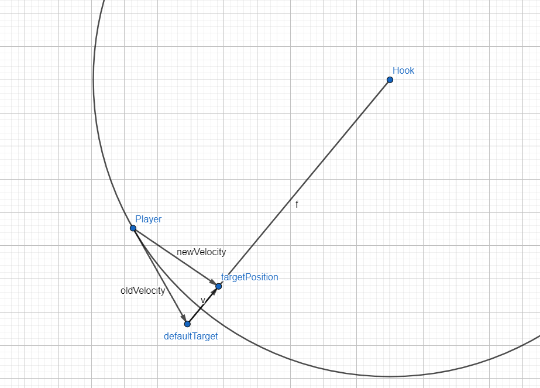
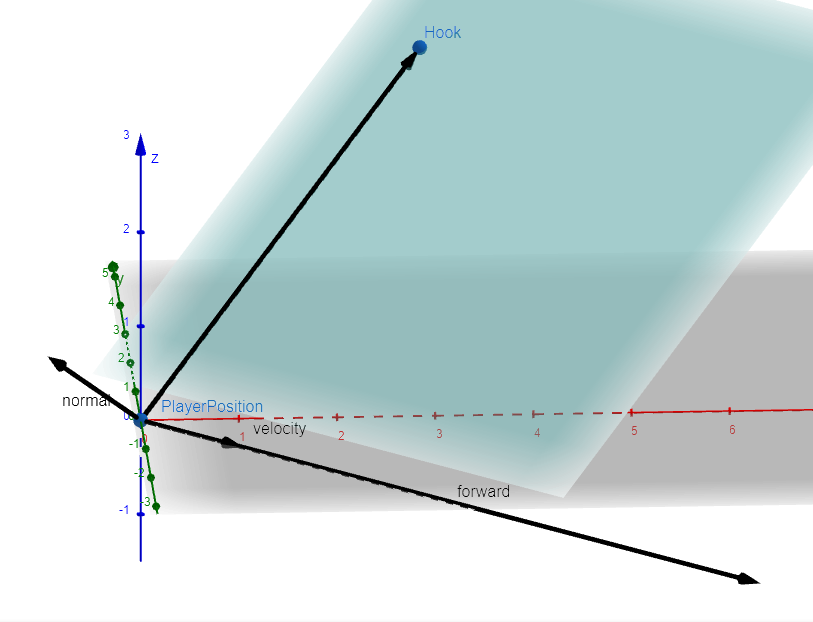

Home > Making a dynamic swinging mechanic in unity
Making a dynamic swinging mechanic in unity
Here I will show how I create a movement system in unity 2022.3 that includes: swinging, grappling, ground movement. In contrast to other swinging mechanics like spiderman 2, I will do this in 3rd person with a static and orthographic camera. At the end I will also show a small prototype that uses this system.
Let's start with the rope that we will be using. To get the attachment point we will do a raycast from the camera:
private void Update()
{
if (Input.GetMouseButtonDown(0))
{
Ray ray = _camera.ScreenPointToRay(Input.mousePosition);
if (Physics.Raycast(ray, out RaycastHit hit))
{
StartHook(hit.point, hit.collider);
}
}
}And then we cast a ray form the player towards the position we just hit from the previous ray:
private void StartHook(Vector3 clickedPosition, Collider collider)
{
if (_isThrowing) return;
Ray ray = new Ray(transform.position, clickedPosition - transform.position);
if (collider.Raycast(ray, out RaycastHit hitInfo, _grappleDistance))
{
_isAttached = true;
_finalHookPosition = hitInfo.point;
}
else
{
_isAttached = false;
_finalHookPosition = transform.position + (clickedPosition - transform.position).normalized * _grappleDistance;
}
}If we hit something we will set our hook position to the hitpoint, otherwise just set it to the maximum throw distance. We will still throw the rope but it will not hit anything.
With the line rendere component we can easily visualize the rope:
To improve the visuals a bit, I implemented an animation for the throwing effect like in this video
Next up I started on the radial movement around a hook position. We can use the unity SpringJoint component, to limit the movement to be only in the sphere around the point. Since we cannot disable this component we will need to add and remove it always when we want to swing!
//Enable swing
_swingJoint = gameObject.AddComponent();
_swingJoint.autoConfigureConnectedAnchor = false;
_swingJoint.connectedAnchor = _finalHookPosition;
float distance = Vector3.Distance(transform.position, _finalHookPosition);
_swingJoint.minDistance = distance;
_swingJoint.maxDistance = 0f;
_swingJoint.spring = _jointSpring;
_swingJoint.damper = _jointDamper;
_swingJoint.massScale = _jointMassScale; And now we can control the radius of the sphere with the min-Distance of the spring joint. So for shortening and extending the rope we can simply modify this parameter:
//Extend rope
if (Input.GetKeyDown(KeyCode.Space))
{
_currentDistance = Vector3.Distance(transform.position, _finalHookPosition);
}
//Shorten rope
if (Input.GetKey(KeyCode.Space))
{
Vector3 directionToPoint = _finalHookPosition - transform.position;
_rigidbody.AddForce(directionToPoint.normalized * _hookForceForward);
_currentDistance -= _shortenSpeed * Time.fixedDeltaTime;
_swingJoint.minDistance = _currentDistance;
}Alright, this already looks interesting! But why does this look like swinging and not grappling? Apparently unity does not force an object with the spring component to be in the specified distance, it rather tries to push it towards that but with the speed the player already gained it will keep spinning around the grapple point.
I will try a more custom approach now. What I will definetly remember is that pulling the player towards the grapple point might result in
FIrst I tried to replacing the spring joint component, but that resulted in weird slow movement. So I am not going to remove the spring joint from my code. I will rather try to move the player while grappling (and swinging) towards the grapple point myself so I won't have the bug where the player keeps swinging around the target.
We will be setting the velocity of the rigidbody directly. We do not need to apply the(fiexd)deltaTime to that because that will do the rigidbody on is own, but when we get the old velocity we will need to adjust for the deltaTime.
private void FixedUpdate()
{
Vector3 oldVelocity = _rigidbody.velocity;
Vector3 desiredVelocity = oldVelocity + _gravity;
if (_inHookMovement)
{
if (Input.GetKey(KeyCode.Space))
{
Vector3 normalTargetPosition = transform.position + (oldVelocity * Time.fixedDeltaTime);
Vector3 hookToDefault = normalTargetPosition - _finalHookPosition;
Vector3 reduceRope = hookToDefault.normalized * _pullSpeed;
Vector3 desiredPosition = _finalHookPosition + (hookToDefault - reduceRope);
Vector3 pullVelocity = desiredPosition - transform.position;
_currentDistance -= pullVelocity.magnitude * Time.fixedDeltaTime;
_currentDistance = Mathf.Clamp(_currentDistance, 0.3f, _grappleDistance);
_swingJoint.minDistance = _currentDistance;
desiredVelocity += pullVelocity;
}
}
desiredVelocity = Vector3.ClampMagnitude(desiredVelocity, _maxAirSpeed);
_rigidbody.velocity = desiredVelocity;
}For the swinging we will also use this pulling behaviour, but without actually changing the distance on the spring joint. In most cases the player probably just wants to go forward and not grapple towards a point so we will need to add soem sort of forward input. For that we will need more math!
A swing is always on a plane. This plane can be defined by the player position, the hook position and a third point. This third point defines the direction the player will go and can be changed. If we want the player to go always directly under the hook position we can simply set the third point to the hook position with a lower y value. This does not feel right because it ignores the current velocity. So why not set the third point with the current velocity?!
At the start of the hook we can simply calculate the plane we need:
private void RecalculateSwingPlane()
{
Vector3 targetPosition = transform.position + _rigidbody.velocity;
_swingPlaneForward = new Plane(transform.position, _finalHookPosition, targetPosition);
}To get the swing direction of the player we can project on to the calculated plane
private Vector3 GetSwingDirection(Plane swingPlane)
{
Vector3 playerDirection = _finalHookPosition - transform.position;
Vector3 perpendicularVector = Vector3.Cross(playerDirection, swingPlane.normal);
Vector3 projectedVector = Vector3.ProjectOnPlane(perpendicularVector, swingPlane.normal);
Vector3 playerForward = -projectedVector.normalized;
//Debug
if (_drawDebug)
{
Debug.DrawLine(transform.position, transform.position + playerDirection, Color.cyan);
Debug.DrawLine(transform.position, transform.position + projectedVector, Color.red);
}
return playerForward;
}Since the swining code that is going with the velocity we will apply it always as a default forward acceleration. For the pulling we can do a mix between the foward direction and the direct path:
private void FixedUpdate()
{
Vector3 oldVelocity = _rigidbody.velocity;
Vector3 desiredVelocity = oldVelocity + _gravity;
if (_inHookMovement)
{
Vector3 normalTargetPosition = transform.position + (oldVelocity * Time.fixedDeltaTime);
Vector3 hookToDefault = normalTargetPosition - _finalHookPosition;
Vector3 reduceRope = hookToDefault.normalized * _pullSpeed;
Vector3 desiredPosition = _finalHookPosition + (hookToDefault - reduceRope);
Vector3 pullVelocity = desiredPosition - transform.position;
if (_isPulling)
{
_currentDistance -= pullVelocity.magnitude * Time.fixedDeltaTime;
_currentDistance = Mathf.Clamp(_currentDistance, 0.3f, _grappleDistance);
_swingJoint.minDistance = _currentDistance;
}
desiredVelocity += pullVelocity;
Vector3 extraSwingVelocity = GetSwingDirection(_swingPlaneForward);
desiredVelocity += extraSwingVelocity.normalized * _swingSpeed * (_isPulling ? _pullMovementFactor : 1f);
}
desiredVelocity = Vector3.ClampMagnitude(desiredVelocity, _maxAirSpeed);
_rigidbody.velocity = desiredVelocity;
}Result:
At this point let's quickly add ground movement:
if (!_inHookMovement)
{
Vector2 input = new Vector2(Input.GetAxisRaw("Horizontal"), Input.GetAxisRaw("Vertical"));
Vector3 movement = new Vector3(input.x, 0, input.y).normalized;
if (movement != Vector3.zero)
transform.rotation = Quaternion.Slerp(transform.rotation, Quaternion.LookRotation(movement), _rotationSpeed);
float speed = _isGrounded ? _groundSpeed : _airSpeed;
desiredVelocity += movement * speed;
if (_initJump)
{
desiredVelocity += Vector3.up * _jumpForce;
_initJump = false;
}
}The last thing I want to do is add air movement (mainly for controling the swinging more). I will use the same approach as for the basic forward movement. The third point of the plane will be calculated with the input:
private void RecalculateSwingPlaneAll(Vector2 input)
{
_swingPlaneAll = new Plane(transform.position, _finalHookPosition, transform.position + new Vector3(input.x, 0, input.y));
}We can add our omni directional air movement to the extraSwingVelocity:
if (currentInput != Vector2.zero)
{
extraSwingVelocity += GetSwingDirection(_swingPlaneAll);
}or just apply the input directly
if (currentInput != Vector2.zero)
{
extraSwingVelocity += new Vector3(currentInput.x, 0, currentInput.y);
}Also note, the _swingPlaneAll should be calculated new whenever any new input is registered except (0, 0)
Lastly I madae a small prototype with the swinging mechanic: